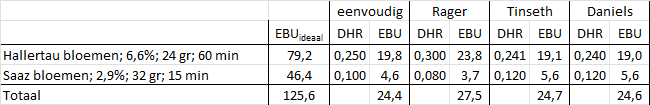
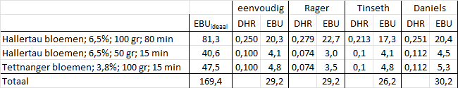
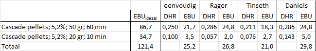

Inleiding
Een van de belangrijkste bijdrage van hop aan bier is de bitterheid. Bitterheid biedt een tegenhanger aan de zoetheid van de mout om zo een uitgebalanceerd bier te maken. In dit artikel wordt beschreven waar de bitterheid van bier vandaan komt en hoe je deze kent berekenen. De inhoud is voor een belangrijk deel gebaseerd op het werk van Michael Hall (Hall 1997), alsmede ook bijdragen afkomstig uit de Hop FAQ van Norm Pyle (Pyle 1995).
De bitterheid van de hop komt door de harsen in de hop. Deze harsen en ook de vluchtige hopoliën zitten in het gele hopmeel. Deze harsen, kristallijne zwakke zuren, worden gecategoriseerd als alfa-, beta- en gammafracties. De alfa- en betafracties worden ook wel weekharsen genoemd omdat ze oplosbaar zijn in hexaan. De gammmafractie is niet oplosbaar in hexaan en wordt daarom ook wel harde hars genoemd. Deze draagt niet bij aan de bitterheid van bier.
De alfafractie bestaat uit een aantal aan elkaar gerelateerde stoffen (humulone, cohumulone, adhumulone, prehumulone en posthumulone) die als groep alfazuren worden genoemd. De hoeveelheid alfazuur is per hopsoort verschillend en bedraagt zo’n 2-15% van het hopgewicht. De oplosbaarheid van deze alfazuren in wort van 100oC en een pH van 5 bedraagt 250 mg/lit. In bier met zijn lagere pH en lagere temperatuur zijn ze niet erg oplosbaar en zullen neerslaan. Tijdens het koken ondergaan de alfazuren een moleculaire verandering, isomerisatie genoemd. De ontstane stoffen worden isoalfazuren genoemd, welke beter oplosbaar zijn in wort en bier en de voornaamste bron van de bitterheid van het bier vormen.
De betafractie van de harsen bestaat uit betazuren en veel andere stoffen, waaronder oxidatieprodukten van de alfa- en betazuren die ontstaan door de veroudering van de hop. De betazuren bestaan uit verschillende lupulonen, vergelijkbaar met de humulonen. De betazuren zijn minder oplosbaar dan de alfazuren, maar ze leveren een kleine bijdrage aan de bitterheid van het bier door hun oxidatieprodukten.
Door allerlei oorzaken komen niet alle (iso)alfazuren in het uiteindelijke bier terecht. Mogelijke factoren die een rol spelen zijn:
- kooktijd van de hop
- de intensiteit van het koken
- de temperatuur tijdens het koken
- de dichtheid van de wort tijdens het koken
- de pH van de wort tijdens het koken
- de concentratie van de hop (gram per liter) in de wort
- de gebruikte hopvorm (bloemen, plugs, pellets, extract)
- het al dan niet gebruiken van een hopzak
- de hoeveelheid eiwituitvlokking tijdens het koken
- de absorptie van bitterstoffen door de gist
- het verwijderen van de hopharsen
- de grootte en vorm van het kookvat
- het gebruik van eventuele klaringsmiddelen tijdens koken en lageren
- het eventueel filteren van het bier
Uiteindelijk komt slechts zo’n 10%-40% van de toegevoegde alfazuren in het bier terecht. De fractie die in het bier terecht komt wordt decimaal hoprendement (DHR) genoemd. Voor een schatting van de bitterheid van het bier is dit DHR van groot belang.
Meeteenheden voor de bitterheid
AAU en HBU
In 1985 is door Dave Line (Line 1985) de AAU (Alpha Acid Unit) ontwikkeld en in 1991 door Charlie Papazian (Papazian 1994) overgenomen onder de naam HBU (Hop Bittering Unit). Beide eenheden zijn hetzelfde en berekenen de massa van de toegevoegde alfazuren.
\[ AAU = HBU = W_{oz} \cdot A_{\%} \]
- \(W_{oz}\) is het hopgewicht, uitgedrukt in ounces.
- \(A_{\%}\) is het gehalte alfazuur in de hop, uitgedrukt als percentage.
1 ounce = 28,35 gram
Wordt in een recept 2,5 ounces Saaz 3% alfazuur gebruikt, dan is de hoeveelheid alfazuur 2,5x3 = 7,5 ounce. Dus AAU = HBU = 7,5.
De AAU en HBU houden geen rekening met het hoprendement en zijn voor de berekening van de bitterheid van het bier niet bruikbaar.
De berekening van de hoeveelheid alfazuur is wel nuttig wanneer het alfazuurpercentage van de hop in een recept niet overeenkomt met het alfazuurpercentage van de beschikbare hop. Wanneer je toch evenveel alfazuur wilt toevoegen, dan moet je de hoeveelheid hop aanpassen.
In een recept staat dat je 52 gram Cascade hop 5,8% alfa moet toevoegen en je beschikt over Cascade hop van 7,5% alfa. Hoeveel van deze hop moet je dan toevoegen?
Hoeveelheid cascade hop 7,5% alfa wordt dan \(\frac{52 \times 5,8}{7,5} = 40\) gram
IBU en EBU
Een betere maat om de bitterheid te berekenen is de EBU (European Bitter Unit) en de in Amerika gebruikte IBU (International Bitter Unit). Ze zijn in feite hetzelfde, maar verschillen in de analysemethode waardoor er toch kleine verschillen kunnen zijn.
\[ \text{1 EBU = 1 IBU = 1 mg iso-alfazuur per liter bier = 1 ppm iso-alfazuur} \]
In Tabel 1 is te zien hoe EBU waarden ervaren worden.
| Bitterheid | EBU |
|---|---|
| Weinig bitter | 5-20 |
| Bitterig | 20-30 |
| Bitter | 30-40 |
| Zeer bitter | > 40 |
In de ideale situatie waarin alle alfazuren omgezet worden in isoalfazuren, dus bij een hoprendement van 100% is de formule voor de berekening van de EBU.
\[ EBU_{ideaal} = 1000 \frac{W \cdot A}{V} \text{ mg/lit} \].
- \(W\) = hoeveelheid toegevoegde hop (gram)
- \(A\) = fractie alfazuur (als decimaal getal, geen percentage!)
- \(V\) = volume van het uiteindelijke bier (liter)
De factor 1000 is voor de omrekening van gram naar mg.
Een toevoeging van 15 gram Hallertauer 4% alfa aan 25 liter wort geeft
\(EBU_{ideaal} = 1000 \frac{15 \times 0,04}{25} = 24\)
De werkelijkheid is complexer, immers niet alle alfazuren komen in het bier. Om dit in rekening te brengen wordt de ideale uitkomst met een getal vermenigvuldigd dat alle processen in rekening brengt die er voor zorgen dat de hoeveelheid isoalfazuren in het bier minder is dan de toegevoegd hoeveelheid alfazuren. Dit getal is het eerder genoemde decimaal hoprendement (DHR). De formule wordt dan:
\[EBU = EBU_{ideaal} \cdot DHR\]
\(DHR\) als fractie en niet als percentage.
Bij een \(EBU_{ideaal}\) van 24 en een DHR van 25%, dan is EBU = 24 x 0,25 = 6
Deze eenvoudige recht toe recht aan formule wordt door alle software programma’s gebruikt om de EBU in het bier te schatten. Het probleem is echter het bepalen van het hoprendement. Daarin verschillen de programma’s en tabellen die je tegenkomt.
Decimaal Hoprendement
Eenvoudige methode
Gebruik Tabel 2 voor een eenvoudige schatting van het digitaal hoprendement (DHR).
| Hopsoort | Kooktijd (min) | DHR |
|---|---|---|
| Bitterhop | >= 60 | 0,25 |
| Smaakhop | 10 - 30 | 0,10 |
| Aromahop | < 10 | 0 |
| Dryhop | 0 |
Kooktijdafhankelijke methodes
Vrijwel alle programma’s en methodes om de EBU/IBU te schatten houden rekening met de duur van de kooktijd en de dichtheid van de kookvloeistof. In dit artikel worden de volgende methodes besproken:
- Rager (Rager 1990), een nauwkeurige en eenvoudige methode met correcties voor kooktijden en wortdichtheid.
- Garetz (Garetz 1994), relatief ingewikkelde methode met correcties voor kooktijden, wortdichtheid, hopvorm, hopconcentratie, hopzakjes, filtering, hop veroudering en gist uitvlokking.
- Tinseth (Tinseth 1997), methode (formules) met correcties voor kooktijd en wortdichtheid.
- Daniels (Daniels 1998), methode met correcties voor kooktijd en wortdichtheid.
Daarnaast zijn er ook nog de methodes van Mosher (Mosher 1994) en Noonan (Noonan 2003).
De vele software programma’s bieden één of meerdere van deze methodes aan. Vaak is Tinseth de standaardkeuze.
| Brouwprogramma | Daniels | Garetz | Rager | Tinseth |
|---|---|---|---|---|
| Brouwhulp | x | x | x | x |
| Brouwvisie | x | x | x | x |
| BrOdeLuxe | x |
Alle methodes geven een hoprendementsfactor op basis van de kooktijd (\(DHR_{kooktijd}\)), soms via tabellen en soms via formules. Daarnaast zijn er meer factoren die van invloed kunnen zijn op het hoprendement. Het overall decimaal hoprendement \(DHR\) is dan het product van \(DHR_{kooktijd}\) en een aantal correctiefactoren.
\[ DHR = DHR_{kooktijd} \cdot C_{sg} \cdot C_{hv} \cdot C_{hc} \cdot C_{kpt} \cdot C_{opslag} \cdot C_{hz} \cdot C_{gv} \cdot C_{fil} \]
| C factor | Oorzaak | Toelichting |
|---|---|---|
| \(C_{sg}\) | SG kookvloeistof | In het algemeen neemt het hoprendement af bij toenemende dichtheid van de kookvloeistof. Alle methodes gebruiken deze correctiefactor. Neem voor de dichtheid van de vloeistof de gemiddelde waarde tijdens het hele kookproces. |
| \(C_{hv}\) | hopvorm | Hopbloemen en plugs hebben geen correctie nodig. Wel correctie voor hoppellets, want deze hebben een hoger rendement. |
| \(C_{hc}\) | hopconcentratie | Rendement neemt af wanneer meer hop wordt toegevoegd. Alleen Garetz heeft hiervoor een formule ontwikkeld. |
| \(C_{kpt}\) | kooktemperatuur | De kooktemperatuur hangt af van de locatie op aarde. Alleen Garetz heeft hiervoor een correctiefactor. |
| \(C_{opslag}\) | opslag | De alfazuren gaan achteruit wanneer ze ouder worden. Het is niet echt duidelijk of de oxidatieprodukten van de betazuren dit enigszins compenseren en of er al dan niet een correctie nodig is. Alleen Garetz heeft hiervoor een formule ontwikkeld. |
| \(C_{hz}\) | hopzakjes | Moeilijk te aan te geven. Alleen Garetz doet een poging hiertoe. |
| \(C_{gv}\) | gistuitvlokking | Moeilijk te aan te geven. Alleen Garetz doet een poging hiertoe. |
| \(C_{fil}\) | filtering | Moeilijk te aan te geven. Alleen Garetz doet een poging hiertoe. |
Wanneer je geen correctie voor een bepaald onderdeel wilt, vul dan de waarde 1 in de correctiefactor.
De methodes van Rager en Tinseth worden hierna uitgewerkt, die van Garetz en Daniels gedeeltelijk en die van Mosher en Noonan niet.
Rager
Het hoprendement op basis van de kooktijd wordt via een tabel gegeven.
| kooktijd (min.) | \(DHR_{kooktijd}\) |
|---|---|
| 0 - 5 | 0,050 |
| 6 - 10 | 0,060 |
| 11 - 15 | 0,080 |
| 16 - 20 | 0,101 |
| 21 - 25 | 0,121 |
| 26 - 30 | 0,153 |
| 31 - 35 | 0,188 |
| 36 - 40 | 0,228 |
| 41 - 45 | 0,269 |
| 46 - 50 | 0,281 |
| 51 - 60 | 0,300 |
| 60 - 90 | 0,300 |
Rager gaat er vanuit dat het hoprendement afneemt bij toenemende dichtheid boven de 1,050 van de kookvloeistof.
\(SG_{koken} \leq 1,050\) dan \(C_{sg} = 1\)
\(SG_{koken} \gt 1,050\) dan \(C_{sg} = \frac{1}{1 + 5\times (SG_{koken} - 1,050)}\)
Andere correctiefactoren gebruikt Rager niet. Dus
\(DHR = DHR_{kooktijd} \times C_{sg}\)
Helaas geeft Rager geen toelichting gegeven op basis waarvan de waarden tot stand zijn gekomen. En zijn rendementen worden veelal als optimistisch ervaren. Zelfs bij een kooktijd van 0 minuten wordt van een rendement van 5% uitgegaan. De methode van Rager schijnt bij hoppellets beter te werken dan bij hopbloemen.
Tinseth
De methode van Tinseth wordt het meest gebruikt en werkt met formules. De uitkomst is vaak iets lager dan bij Rager, maar niet altijd. Tinseth beveelt verder aan om met name de formule voor kooktijd aan te passen aan de eigen situatie, door te experimenteren met de factor 4,15.
\(DHR_{kooktijd} = \frac{1 - e^{-0,04 \times kooktijd(min.)}}{4,15}\)
\(C_{sg} = 1,65 \times 0,000125^{SG_{koken} - 1}\)
Andere correctiefactoren gebruikt Tinseth niet. Dus
\(DHR = DHR_{kooktijd} \times C_{sg}\)
Garetz
Deze methode is een iteratieve methode en daardoor lastiger te gebruiken. Het is de enige methode die met veel correctiefactoren werkt. Het hoprendement op basis van de kooktijd wordt via een tabel gegeven.
| kooktijd (min.) | \(DHR_{kooktijd}\) |
|---|---|
| 0 - 5 | 0,00 |
| 6 - 10 | 0,00 |
| 11 - 15 | 0,02 |
| 16 - 20 | 0,05 |
| 21 - 25 | 0,08 |
| 26 - 30 | 0,11 |
| 31 - 35 | 0,14 |
| 36 - 40 | 0,16 |
| 41 - 45 | 0,18 |
| 46 - 50 | 0,19 |
| 51 - 60 | 0,20 |
| 61 - 70 | 0,21 |
| 71 - 80 | 0,22 |
| 81 - 90 | 0,23 |
Voor de SG correctie wordt de formule van Rager gebruikt.
Hopvorm correctiefactor = 1,1 voor kooktijden van de pellets van 1-30 min. en anders 1.
Voor de andere correctiefactoren zie zijn boek.
Daniels
Het hoprendement op basis van de kooktijd wordt voor hopbloemen en hoppellets via een tabel gegeven. Er hoeft dus geen correctiefactor voor de hopvorm gegeven te worden. Zou je daar toch mee willen werken dan valt uit de tabel valt op te maken dat deze ongeveer 1,26 is.
| kooktijd (min.) | DHR bloemen | DHR pellets |
|---|---|---|
| 0 - 9 | 0,05 | 0,06 |
| 10 - 19 | 0,12 | 0,15 |
| 20 - 29 | 0,15 | 0,19 |
| 30 - 44 | 0,19 | 0,24 |
| 45 - 59 | 0,22 | 0,27 |
| 60 - 74 | 0,24 | 0,30 |
| 70 - … | 0,27 | 0,34 |
Voor de SG correctie wordt de formule van Rager gebruikt.
Samenvatting
Alle methodes geven een schatting van de EBU waarde. De exacte waarde kan alleen via een laboratorium test bepaald worden. Uit onderzoeken blijkt ook nog eens dat de meeste mensen slechts een verschil van 4 of groter kunnen waarnemen. Hoe belangrijk is het dan nog om een zo goed mogelijke schatting te maken?
De adviezen die gegeven worden komen er op neer om een zo constant mogelijk en reproduceerbaar brouwproces uit te voeren. De eigen brouwinstallatie zo goed mogelijk te leren kennen. En dan na het brouwen van een bier de berekende EBU waarde te vergelijken met een laboratoriumuitkomst (wanneer dat kan) of via proeven te vergelijken met een bier waarvan de EBU waarde bekend is. Op basis van de eventuele verschillen kun je dan een correctiefactor voor jouw brouwproces maken. Verder is het opmerkelijk dat de eenvoudige methode verrassend goede schattingen geeft.
Voorbeelden
Berekening van de EBU volgens de methode eenvoudig, Tinseth, Rager en Daniels voor een aantal brouwsels.
Brouwsel 1
Er wordt 20 liter Kölsch gebrouwen met een begin SG van 1,045 en de volgende hopgiften:
- 24 gram Hallertau 6,6% alpha, bloemen, kooktijd 60 min.
- 32 gram Saaz 2,9% alpha, bloemen, kooktijd 15 min.

Brouwsel 2
Er wordt 80 liter Dubbel gebrouwen met een begin SG van 1,065 en de volgende hopgiften:
- 100 gram Hallertau 6,5%, bloemen, kooktijd 80 min.
- 50 gram Hallertau 6,5%, bloemen, kooktijd 15 min.
- 100 gram Tettnanger 3,8%, bloemen, kooktijd 15 min.

Brouwsel 3
Er wordt 30 liter Pale Ale gebrouwen met een begin SG van 1,060 en de volgende hopgiften:
- 50 gram Cascade 5,2% alpha, pellets, kooktijd 60 min.
- 20 gram Cascade 5,2% alpha, pellets, kooktijd 10 min.
